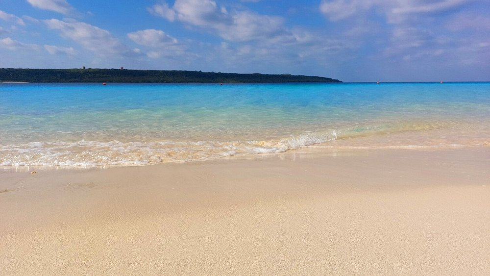
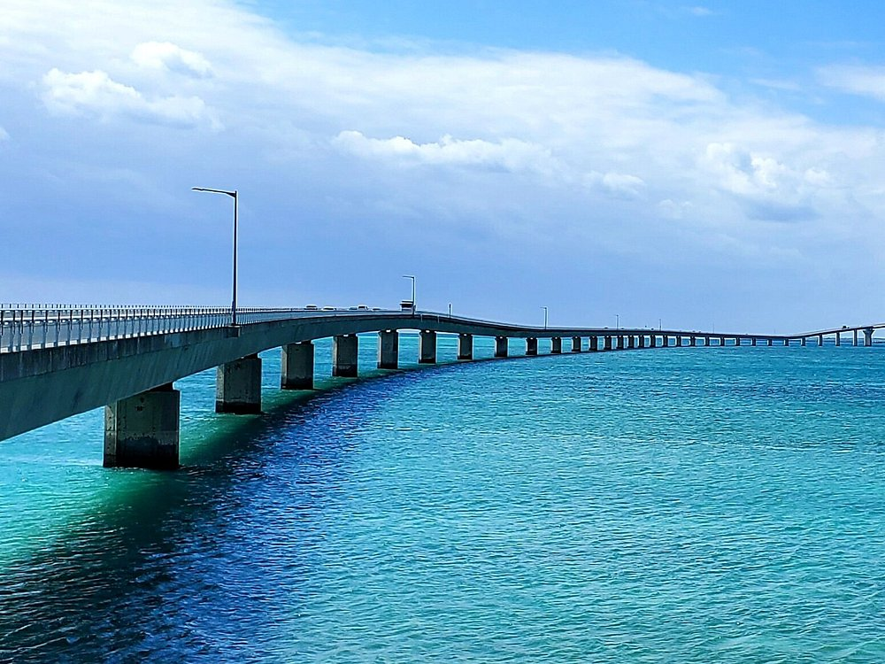

Hirara平良
Town center, local restaurants, small shops, nightlife, and everyday island errands.
市街地、ローカルな飲食店、小さなお店、夜の時間、島の日常が集まるエリア。

Yonaha Maehama Beach
与那覇前浜ビーチ

Irabu Bridge
伊良部大橋

Sunayama Beach
砂山ビーチ
A gentle introduction to the island and how to explore it.
宮古島ガイド
Wind & Island Time風と、島時間
November brings northerly seasonal winds. Pack a light layer and keep sea outings flexible: a café, a maker's shop, or a long lunch can be part of the day too.
11月は北寄りの季節風が吹く時期。薄手の羽織りを持ち、海の予定は天候に合わせて。カフェや作り手のお店、ゆっくり過ごすお昼も、島の楽しみのひとつです。
Island Climate Guide島の気候を知るStart Hereはじめに
Beaches and bridges are only the beginning. This guide brings together practical basics with the softer details that shape Miyakojima: weather, distance, rhythm, and care for the places you visit.
ビーチや橋だけではなく、気候、距離感、島のリズム、訪れる場所への思いやりまで。宮古島を心地よく知るための基本をまとめています。
Island Areas宮古島のエリア
Miyakojima is small, but each area has its own rhythm. Use this as a gentle starting point before choosing where to eat, stay, drive, or slow down.
宮古島は小さな島ですが、エリアごとに空気感や過ごし方が少しずつ違います。食事、宿泊、ドライブ、ゆっくり過ごす場所を選ぶ前の小さな入口としてご覧ください。
Town center, local restaurants, small shops, nightlife, and everyday island errands.
市街地、ローカルな飲食店、小さなお店、夜の時間、島の日常が集まるエリア。
Soft beach days, Yonaha Maehama, quiet roads, and a slower coastal feeling.
与那覇前浜や穏やかな道、ゆっくり海を感じる時間が似合うエリア。
Bridge drives, blue water views, dramatic coastlines, and airport-side discoveries.
橋を渡るドライブ、青い海、ダイナミックな海岸線、空港周辺の発見が楽しめるエリア。
Resort stays, family-friendly stops, restaurants, and easy access to southern island scenery.
リゾート滞在、家族で過ごしやすい場所、レストラン、南側の景色に触れやすいエリア。
Quiet roads, local life, wide views, and a deeper sense of Miyakojima's everyday pace.
静かな道、地域の暮らし、広い景色、宮古島の日常のリズムを感じられるエリア。
How My Miyakojima CuratesMy Miyakojimaの選び方
My Miyakojima looks for places, people, and services that feel connected to the island: thoughtful owners, real local use, clear information, and photos that help visitors understand the atmosphere before they go.
My Miyakojimaでは、島とのつながりを感じられる場所、人、サービスを大切に選んでいます。オーナーの思い、地元での親しまれ方、分かりやすい情報、訪れる前に雰囲気が伝わる写真を重視しています。
Stories and businesses that feel rooted in Miyakojima.
宮古島らしさや島との関係性が感じられること。
Information that helps both visitors and Japanese readers feel comfortable.
観光客にも日本語で読む方にも、安心して伝わる情報であること。
Bright, real, specific images that show the place, product, person, or experience clearly.
場所、商品、人、体験がきちんと伝わる、明るく自然な写真であること。
Miyakojima is a small island in Okinawa Prefecture known for its crystal clear waters, coral reefs, and beautiful beaches. Many visitors first come for the ocean, but soon discover the relaxed island lifestyle and warm local community.
宮古島は沖縄県にある小さな島で、透明度の高い海と美しいビーチで知られています。海を目的に訪れる人が多いですが、島のゆったりとした暮らしや温かい人々との出会いも魅力です。
Miyakojima is best explored slowly. Driving across the bridges to nearby islands such as Irabu, Ikema, and Kurima is one of the most beautiful ways to experience the scenery and rhythm of the island.
宮古島は、ゆっくり巡ることで魅力がより伝わる島です。伊良部島、池間島、来間島へ続く橋を渡りながら景色を楽しむ時間も、宮古島ならではの体験のひとつです。
Miyako Airport connects the island with major cities including Tokyo, Osaka, and Okinawa. Direct flights operate daily.
宮古空港は東京・大阪・沖縄本島など日本の主要都市から直行便があります。
Miyakojima has a subtropical climate with warm temperatures year-round. Summer offers the best beach conditions while winter remains mild compared with mainland Japan.
宮古島は一年を通して温暖な亜熱帯気候です。夏は海を楽しむのに最適で、冬も本州より暖かく過ごしやすい気候です。
From long bridges over turquoise water to quiet beaches and wide island skies, Miyakojima is filled with unforgettable scenery that changes gently throughout the day.
透き通る海の上に伸びる橋、静かなビーチ、広い空。宮古島には時間帯によって表情を変える美しい風景がたくさんあります。
The easiest way to explore Miyakojima is by rental car. Many beaches and scenic areas are easier to reach by car.
宮古島を観光するにはレンタカーが便利です。
Many beaches in Miyakojima have no lifeguards so visitors should swim carefully. Bringing cash is also helpful as smaller local businesses may not accept cards.
宮古島の多くのビーチにはライフガードがいないため海で泳ぐ際は十分注意してください。小さなお店ではカードが使えない場合もあるので現金を持っておくと安心です。
Miyakojima is known for its natural beauty and quiet communities. Visitors are encouraged to respect local culture, care for the beaches, and enjoy the island thoughtfully.
宮古島は自然の美しさと静かな地域社会が魅力の島です。ビーチや自然環境を大切にしながら、思いやりを持って島を楽しんでいただけたら嬉しいです。
Give Back Gently島にやさしく関わる
If you have a little time during your stay, there are thoughtful ways to support the island: joining a beach clean, respecting local life, supporting small businesses, and learning about community initiatives.
滞在中に少し時間があれば、ビーチクリーンへの参加、地域の暮らしへの配慮、地元のお店の応援、コミュニティ活動を知ることなど、宮古島にやさしく関わる方法があります。
Contribute to Miyakojima宮古島にできることを見るLooking for places to eat, relax, or experience the island? Visit our curated recommendations featuring restaurants, cafes, wellness spaces, and more.
食事やリラックスできる場所、島ならではの体験を探している方はおすすめページをご覧ください。
View Recommendations →